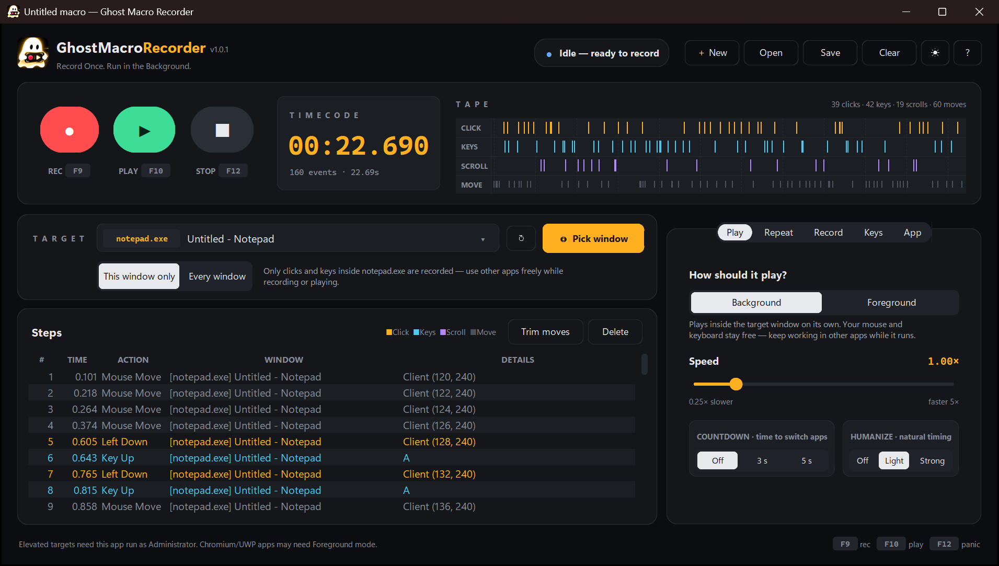

Pick the app
Choose a window from the list, press Ctrl Alt T inside it, or let Ghost record whatever you click.
Ghost Macro Recorder records your clicks and keystrokes in one app, then replays them inside that window while your own mouse and keyboard stay free for other work.

Three steps, then let it run. Your mouse never moves and your typing never lands in the wrong window.
Choose a window from the list, press Ctrl Alt T inside it, or let Ghost record whatever you click.
Press F9 and do the job. Clicks, keys and scrolls appear on the live tape and in the step list.
Press F10. Ghost replays the steps inside that app, as often or as long as you choose.
Built for repetitive work in one window: data entry, form filling, testing, idle tasks in apps that need the same clicks every day.
Input goes straight to the target window. Keep using your PC.
Record just the chosen window; clicks elsewhere are ignored.
3 times, forever, or for exactly 1 minute, 5 minutes or 1 hour.
A 3 or 5 second start, and small random pauses so runs vary.
Record, play, stop and target from anywhere. Change any key.
See every step, delete what you don't need, trim mouse moves.
Runs by the clock, starts with Windows, stays on top if you like.
No network code, no telemetry. Password fields are never recorded.
Most macro tools take over your computer while they run. Ghost works out of sight.
| While a macro runs | Typical recorder | Ghost Macro Recorder |
|---|---|---|
| Your mouse cursor | Jumps around the screen | Stays where you left it |
| Your keyboard | Typing goes to whatever is in front | Free for other apps |
| The target window | Must stay in front | Can sit behind other windows |
| Run for a set time | Usually a loop count only | Count, forever or a timer |
| Apps that need real input | Real mouse and keys | Foreground mode does the same |
Version 1.0.1 · 16.6 MB · Windows 10 and 11 · free, no account
Windows blocked it? Here's why.